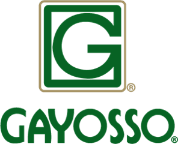

REPORTE DE LAS MODIFICACIONES REALIZADAS
En este primer sprint se dividía en las siguientes tareas:
• Búsqueda de imagen del logotipo
• Incorporar el logotipo a la página web
Se colocó un Emoji de un ataúd con el título de servicios Gayosso dado que era nuestro primer encuentro con react.
Se tenía planeado en próximos sprint colocar imágenes y nos dimos cuenta que al haber colocado el contenedor de Gayosso no nos permitiría incorporar imágenes en la función return de react. Otro inconveniente es que el Emoji y el título no eran el logotipo real de Gayosso que se buscaba incorporar por lo que no se estaba cumpliendo con el primer sprint. Fue necesario investigar como incorporar imágenes en react y buscar el logotipo. Encontramos el siguiente recurso:
Monteserin Pablo. (2020). Cómo cargar una imagen en react. Recuperado de: https://www.youtube.com/watch?v=ZwSwp8iRk2E.
ID 2_Gayosso_proyecto de la historia #2
En este sprint las tareas son las siguientes:
• Investigar nombres de las capillas
• Búsqueda de imágenes
• Incorporar imágenes al archivo.
En este segundo sprint se hizo un ajuste en el orden de las tareas. Se investigó en nombre de las capillas y estas son del Carmen, Vallarta y cementerio. En base a estos datos se buscaron las imágenes para enseguida hacer la codificación.
ID 3_Gayosso_proyecto de la historia #3
En este sprint las tareas son las siguientes:
• Tarea Investigar servicios de previsión, florería y cafetería
• Tarea Codificación
Se hicieron los ajustes en el backlog ID 3 incluyendo los planes de previsión funeraria, mausoleo y cementerio. Además, se agregó en cometarios que aparezcan lo beneficios de contratar en Gayosso
ID 4_Gayosso_proyecto de la historia #4
En este sprint las tareas son las siguientes:
• Tarea investigar la historia de Gayosso y realizar una línea de tiempo de Gayosso a nivel nacional
• Tarea Codificación
Se hicieron los ajustes en el backlog ID 4 y, por lo tanto, en sus sprint considerando la importancia de agregar datos históricos de la funeraria Gayosso incluyendo apertura de capillas y cementerios a nivel nacional a través de una línea de tiempo. Se cumplió con el objetivo del sprint, se realizó la línea de tiempo de Gayosso a nivel nacional en donde aparece desde la primera agencia de inhumaciones, el año en que se fundó Capillas de Carmen, Capillas Vallarta, cuando es adquirido el parque funeral colonias, entre otros. Se hizo la adecuada codificación en react.
